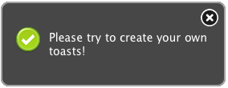

jquery-toastmessage-plugin Demo
by akquinet
To create some toastmessages just click on the following links.

Show a success toast not sticky|sticky
Show a notice toast not sticky|sticky
Show a warning toast not sticky|sticky
Show a error toast not sticky|sticky
Documentation
jquery-toastmessage-plugin documentation is available on the wiki.
License
jquery-toastmessage-plugin is licensed under the Apache License 2.0. The project was founded by akquinet A.G..